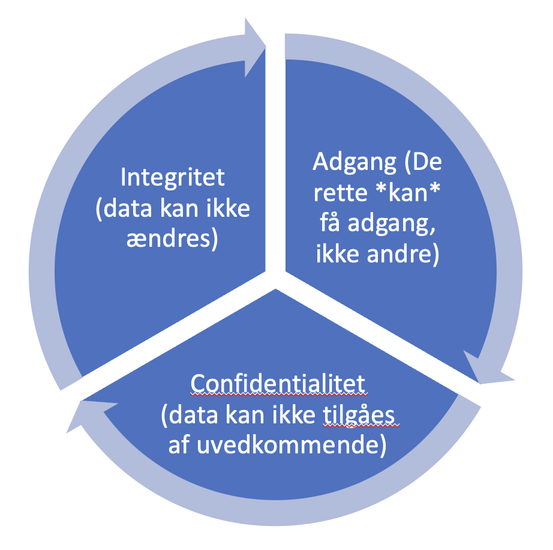

IT-sikkerhed C
VIGTIGE ORD
- Password-sikkerhed
- Malware
- Virus
- Ransomware
- Phishing
- Trojanske heste
- GDPR
- Social enigneering
- VPN
CIA-MODELLEN - om INFORMATIONSSIKKERHED
CIA-modellen handler om informationssikkerhed

- Confidentaility / Konfidentialitet
- Integrity/ / Integritet
- Accesibility / Adgang
Risiko-styring

IT-risiko-matrix

Hackere
Sikkerhedsråd
PASSWORD SIKKERHED
OPGAVE
Tjek styrken på et password (NB! Brug ikke dit eget
- ConKeans 5 tips til bedre online sikkerhed
- DR.DK Mærks og NotPeteya
- Dr.dk: valgsystem fyldt med sikkerhedshuller
Ekstra materialer
2 små film om IT-sikkerhed Se video om Bahne her
Flere case-historier 3 kerne-begreber i it-sikkerhed er confidentiality, integrity og avaliability. Confidentiality betyder fortrolighed. Dine data skal naturligvis være hemmelige og det skal sikres at uvedkommende ikke kan få adgang. Integritet betyder, at data er korrekte og fuldstændige. Availability betyder, at de rette brugere kan få adgang til data, når de måtte ønske det. Eksempel: Virksomheden Metallinox udvikler intelligent software til at styre svejsemaskiner. Planerne for næste version af software skal > naturligvis behandles meget hemmeligt (=fortroligt) for at konkurrerende virksomheder ikke får dem. Det er også vigtigt, at integriteten > af planerne er høj, det kan ikke nytte noget, at man ikke gemmer hele systemet, men kun nogle af planerne. Endeligt skal de rigtige personer kunne får adgang til planerne, chefen og designerne, men ikke virksomhedens kantine-personale fx.
TÆNK SOM EN HACKER
Lær simpel hacking. Prøv første gratis modul her.